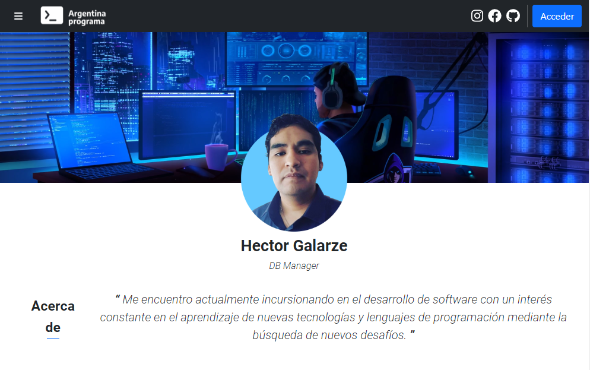
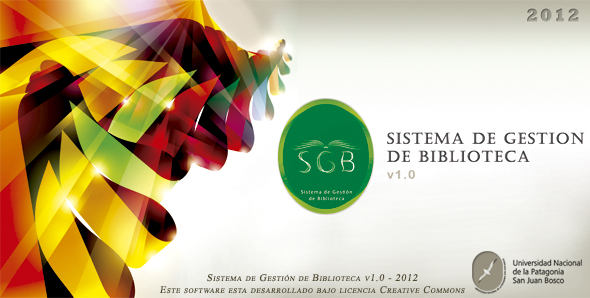
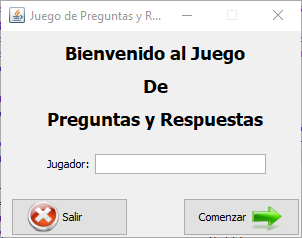

Portfolio #YoProgramo
Portflio desarrollado como trabajo integrador del curso #YoProgramo dictado por Argentina Programa.
2022

Sistema de Gestión de Biblioteca
Proyecto desarrollado como parte del trabajo final para la cursada de "Desarrollo de Software".
2012

Juego de Preguntas y Respuestas
Juego de trivia de preguntas y respuestas relacionadas a la programación orientada a objetos (POO).
2011